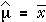

Estimating a population mean
A population mean, µ, is usually estimated by the mean from a random sample.

We now investigate the error distribution for this estimator.
Distribution of the estimator
If the population standard deviation is σ,
the sample mean,  ,
has a distribution with mean and standard deviation
,
has a distribution with mean and standard deviation
| = μ |
| = |
and is approximately normal if the population is normal or if the sample size is reasonably large.
Distribution of the estimation error
The error in the estimate is
error =  − μ
− μ
so it has the same distribution as  ,
but shifted so that it is centred on zero. Therefore, the error distribution
is approximately:
,
but shifted so that it is centred on zero. Therefore, the error distribution
is approximately:
| error ~ normal (0, | ) |
Estimating the mean daily turnover of a shop
In practical applications, the population distribution is unknown. (If we knew the value of the population mean, µ, why would we try to estimate it?) However to illustrate the error distribution, the diagram below does show an underlying normal population of daily turnovers with mean $1000 and standard deviation $200.
The diagram also shows the error distribution that would result from using
the mean,  ,
of a random sample of daily turnovers to estimate µ.
,
of a random sample of daily turnovers to estimate µ.
Drag the slider and observe that:
As the sample size increases, the error distribution becomes more concentrated near zero — i.e. the errors tend to be smaller.